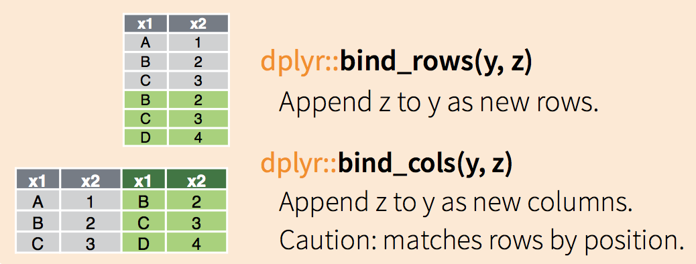

R 2017
03/05/2017
repaso de la clase anterior
lectura/escritura
"read_csv()" lee un archivo delimitado por comas.
read_csv(readr_example("mtcars.csv"))
read_csv(readr_example("mtcars.csv.zip"))
read_csv(readr_example("mtcars.csv.bz2"))
read_csv("https://github.com/tidyverse/readr/raw/master/inst/extdata/mtcars.csv")
Se pueden controlar cosas como col_types, col_names, delim, skip, n_max, y otros.
Existe una "write_csv" equivalente.
Piping con Magrittr y operador %>%
x %>% f en vez de f(x) # el valor de x se direcciona a f()
x %>% f(., arg2, arg3) # por default pasa al 1er argumento
x %>% f(arg2, arg3) # por lo tanto, puede obviarse el punto
x %>% f(arg1, ., arg3) # puede usarse el punto para direccionar a otro lado
mean_by_state %>% # mi data.frame
mutate(frac = mean/overall_mean) %>% # creo la columna frac
filter(frac >= 1) %>% # filtro la columna frac
arrange(desc(frac)) # ordeno de mayor a menor
combinando data.frames (sin llaves)
combinando data.frames (con llaves)


- miren con cuidado el cheat-sheet de dplyr
repaso práctica 4
- Entrar en Buenos Aires Data (ver link en la web del curso)
- Ir a datos de Contaminación sonora
- Bajar csv's de Torres y Mediciones 2011, 2012 y 2013
- Cargar todo en R
- Hacer un gran data.frame con TMI y las tres mediciones
- Cuales son los 5 barrios en donde hay más (menos) promedio energético hora?
- Cómo se comparan los valores extremos con la media de todos los barrios?
hacer gran-dataframe-gran
library(readr)
tmi <- read_csv("~/Downloads/torres-de-monitoreo-inteligente.csv")
## Parsed with column specification:
## cols(
## TMI = col_integer(),
## BARRIO = col_character(),
## DIRECCION = col_character()
## )
## > tmi
## # A tibble: 16 × 3
## TMI BARRIO DIRECCION
##
## 1 1282 Mataderos Av. Eva Perón 5251
## 2 1283 Liniers Lisandro de la Torre 39
## 3 1284 Vélez Sarsfield Av. Segurola 726
m2011 <- read_csv2("~/Downloads/mediciones-2011.csv")
m2012 <- read_csv2("~/Downloads/mediciones-2012.csv")
m2013 <- read_csv2("~/Downloads/mediciones-2013.csv")
# construyo data.frame
ruido_bsas <- bind_rows(m2011, m2012, m2013)
ruido_bsas <- left_join(ruido_bsas, tmi)
Ruidosos? Tranquilos?
# 5 barrios más (menos) ruidosos
ruido_barrios <- ruido_bsas %>%
group_by(BARRIO) %>%
summarise(ruido_avg = mean(PROMEDIO_ENERGETICO_HORA, na.rm = TRUE)) %>%
arrange(desc(ruido_avg))
# pregunta: de dónde viene el NA? (Assumptions...)
ruido_barrios %>% head(n=5) # o tail(n=5) para ver los menos ruidosos
Extremos vs. media?
# como se comparan los valores extremos y la media
ruido_barrios %>% summary # o más elegante: ruido_barrios %>% select(ruido_avg) %>% summary
## también funciona esto:
## ruido_barrios %>% summarise(mean(ruido_avg))
## ruido_barrios %>% summarise(max(ruido_avg))
## ruido_barrios %>% summarise(min(ruido_avg))
59.79/70.49
# [1] 0.8482054
74.94/70.49
# [1] 1.06313
RStudio
cómo grabo lo que hago?
proyectos
atajos de teclado
Funciones
anatomía de f()
alta_funcion <- function(arg1, arg2, ...){
alto código
código y más código
alto_resultado <- manso código
return(alto_resultado)
}
ejemplo
paso a paso
- Note the overall process: I only made the function after I’d figured out how to make it work with a simple input. It’s easier to start with working code and turn it into a function; it’s harder to create a function and then try to make it work.